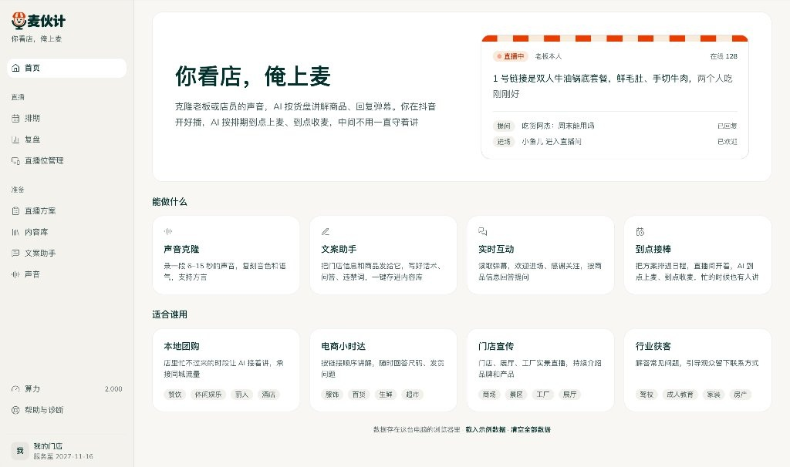

SERVICES
业务范围
从一项高频操作入手，用真实样本检验效果，再把可用的方案接入岗位和系统。
行业 AI 工作流定制
把数据输入、模型处理、人工复核和结果回写串成一条流程。按行业需要接入生成、分析、视觉识别或现场设备。
软件开发与系统集成
定制审批、录入与统计工具，升级现有系统，通过接口让不同平台同步数据、回写状态、触发下一步操作。
SELECTED WORK
项目案例
门店直播运营
麦伙计
店员录入货盘、准备话术、排好班次，工作台按时间上麦并回答弹幕。店员可以随时接管直播，结束后查看复盘记录。


民族舞教学
舞承智学
学员跟随示范分段练习。系统把采集到的骨骼姿态与标准动作对照，提示关节角度和节奏偏差，并保存练习记录。


DELIVERY
从样本验证到上线移交
梳理需求
共同走一遍现有流程，确定优先环节、操作岗位与预期产出。
验证样本
用日常及异常样本试跑原型，由业务人员复核结果，确认适用边界。
开发与集成
开发核心功能，对接数据、接口与权限，联调后确认上线安排。
验收与移交
沿真实流程完成验收，移交配置与操作手册，明确维护负责人。
ACCEPTANCE
如何验收，如何报价
以单据字段提取为例，双方在开工前约定样本、判断标准与费用口径。
- 流程与质量
- 从原始单据一路检查到系统回写，对照人工复核结果统计错项、漏项和转人工比例。
- 时长与异常
- 记录每批处理耗时与模型调用量，模拟识别失败、接口中断，验证人工接管和日志追溯。
- 报价与维护
- 按系统接入、部署环境和实施范围拆项报价；单列第三方模型与算力费用，约定里程碑、变更和维护期限。
PEOPLE
核心团队

黄耀增
CEO · 方案与合作华中科技大学 · 计算机硕士
史龙堃
联席 CTO · 模型优化与部署东南大学 · 计算机硕士

赵浩翔
联席 CTO · 多模态研发中国科学技术大学 · 软件工程硕士

杨凯森
CPO · 产品与交互曼彻斯特大学 · 计算机硕士

郝品越
COO · 实施与验收华中科技大学 · 计算机硕士
黄俊豪
CFO · 成本与商务山东大学 · 金融专业硕士
团队成果涵盖国家级 AI 与算法竞赛、机器人赛事、专利与软件著作权。查看宣传册中的荣誉与证书
CONTACT
聊聊你的业务流程
带上一段现行流程、一份脱敏样本，以及希望改善的环节，我们可以从一次样本试跑开始。